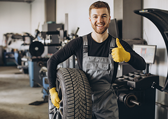
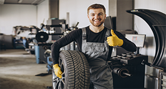
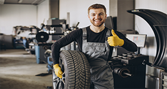

Sobre Oficina Auto Mestre
Bem-vindo à Oficina Auto Mestre, o destino preferido para cuidar do seu veículo com expertise, comprometimento e qualidade excepcionais. Somos uma equipe dedicada de profissionais automotivos apaixonados por oferecer serviços de alta qualidade e atendimento personalizado.
leia maisSobre Oficina Auto Mestre
Bem-vindo à Oficina Auto Mestre, o destino preferido para cuidar do seu veículo com expertise, comprometimento e qualidade excepcionais. Somos uma equipe dedicada de profissionais automotivos apaixonados por oferecer serviços de alta qualidade e atendimento personalizado.
leia mais


 
